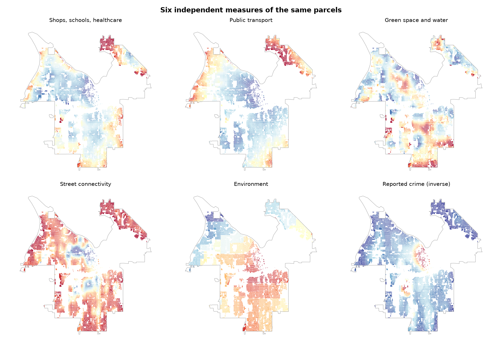
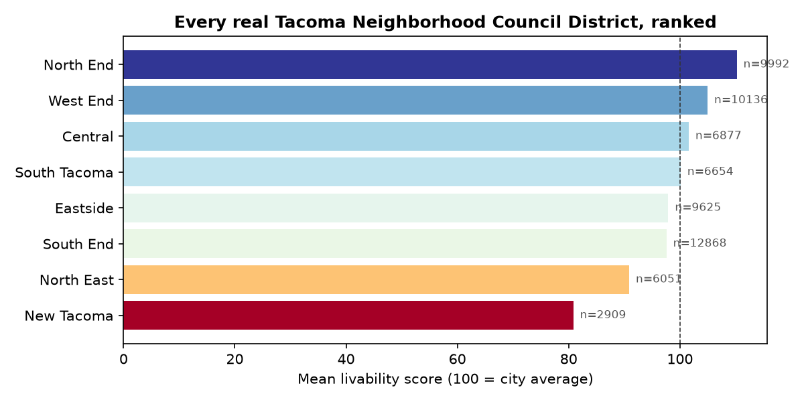

A real-data access, safety, and environmental-quality index for every real residential parcel in the City of Tacoma, WA
65,229 real residential parcels - single-family homes, duplexes, triplexes, fourplexes, and apartment/condo buildings - scored on how good their surrounding area is to live in, using only real, publicly-sourced data. No modeled or illustrative values anywhere in this report. Scores run 35.4 to 121.9; 100 is the citywide average. See Methodology for how the six themes are built and combined, and Limitations for every real gap or adaptation this required.
Why this scope
Tacoma's housing stock is overwhelmingly single-family: of the 65,229 real parcels the Pierce County Assessor classifies as residential within city limits, 55,027 (84%) are single-family dwellings. Restricting an index to apartments and condos alone - a reasonable choice in a denser, more apartment-centric city - would describe a small and unrepresentative slice of how Tacoma actually lives. This report instead scores every real residential parcel type: single-family, duplex/triplex/fourplex, and apartment/condo. Mobile homes sit on Pierce County's own separate parcel layer and are not covered here.
Methodology
Each parcel is scored on six themes, each built from real public data and combined so that a parcel has to do reasonably well across the board - excelling on two themes cannot fully offset being poor on four. Concretely: each theme is reduced to a single z-score (direction-corrected so higher always means better), and the total combines the average of the six theme z-scores with their minimum (70/30 weighting), then is rescaled so the citywide mean is exactly 100.
Theme
What it measures
Data source
Shops, schools, healthcare
Real walking-network distance (not straight-line) to the nearest supermarket, school, preschool, pharmacy, healthcare facility, library, and sports facility
OpenStreetMap
Public transport
Walking-network distance to the nearest bus stop and, separately, to the nearest rail stop (Tacoma Link light rail or Sounder commuter rail)
Pierce Transit GTFS + Sound Transit GTFS
Green space and water
Walking-network distance to the nearest park of at least 1 hectare (the WHO Europe threshold) and to the nearest open water
Metro Parks Tacoma + OpenStreetMap
Street connectivity
Real intersection density (junctions per km²) in the walkable network around each parcel - a dense grid supports short trips; cul-de-sacs don't
OpenStreetMap road network
Environment
Local air-pollution burden percentile (fine particulates, ozone, diesel particulate matter, NO2, traffic proximity) for the parcel's census tract
EPA EJSCREEN (archived - see Limitations)
Reported crime
Density of reported Person and Property crime incidents within roughly a five-minute walk, over the last three years
City of Tacoma Police Department
Every scored parcel, mapped at its real footprint - all 65,229 of them. Blue is above the citywide average, red is below. The full residential street grid is visible directly: the strongest above-average area is the North End peninsula; the clearest below-average concentration sits in a band running from central Tacoma toward the Tideflats industrial waterfront, and across much of the North East peninsula.
What drives the score
Splitting the total into its six components shows which real factors actually move the ranking, and which don't - a theme can correlate strongly with the total and still barely matter if it has little real variation across the city (and vice versa).
Left: how much each theme relates to the total score. Reported crime is the strongest single driver (r = 0.45), followed by shops/schools/healthcare access (r = 0.38), environment (r = 0.33), and green space and water (r = 0.31). Street connectivity barely matters (r = 0.07) at citywide scale. Right: how much each theme actually varies across the 65,229 parcels. Environment, reported crime, and street connectivity vary the most - each is built from a single real metric, while the access themes average several real sub-metrics together, which narrows their spread (a real statistical property, not a flaw in the data).
A real, sizable shift from what a narrower apartment-only analysis would show: restricting this same method to only Tacoma's apartment and multifamily parcels (10,082 of the 65,229 scored here) produces a very different ranking of what matters - amenity access and green space dominate, while reported crime and environment barely register. Across the full residential population, that reverses: reported crime becomes the single strongest driver of the total score, and environment - previously almost irrelevant - becomes a real, meaningful factor. Apartments cluster in Tacoma's already-walkable urban core, where amenity access varies widely but crime and pollution vary comparatively little within that specific footprint. Once single-family neighborhoods across the whole city are included, the picture inverts: nearly everywhere has adequate street connectivity on Tacoma's historic grid, but safety and air quality vary sharply block to block - and those are what end up separating a strong neighborhood from a struggling one.
Six independent measures of the same parcels

Six panels of the same 65,229 parcels, one per theme, all on the same color scale. Environment shows a clear geographic gradient - better along the Puget Sound-facing north and west, worse moving inland and south toward and past the Tideflats. Reported crime shows a closely related but not identical pattern, worse in a band through central Tacoma. Street connectivity is comparatively flat citywide - Tacoma's historic grid extends through most of its residential area, so this theme separates few neighborhoods from each other, consistent with its weak correlation above.
Every real neighborhood, ranked
Tacoma's eight official Neighborhood Council Districts, ranked by mean score across every real residential parcel each contains.

North End leads (110.2, n=9,992) and West End follows closely (105.0, n=10,136) - both largely on the Puget Sound-facing side of the peninsula. New Tacoma trails by a wide margin (80.8, n=2,909) - its real mean crime density (1,972 incidents/km²) runs over four times the citywide average (471/km²), and its real mean pollution-burden percentile (64.2) sits meaningfully above the citywide average (57.0), consistent with its central, industrial-adjacent location. North East - the city's other below-average district - is visibly the most crime- and pollution-affected area in the small-multiples map above.
Limitations
Reported crime, not perceived safety. No neighborhood-level resident safety-perception survey was found for Tacoma or Pierce County (checked directly - the Washington Association of Sheriffs and Police Chiefs publishes only county-level annual crime totals). This report uses real point-level reported-crime incidents from the Tacoma Police Department instead - a related but genuinely different signal. Reported crime reflects what happened and was recorded; perceived safety reflects how residents feel, which can diverge from it in either direction.
Environment data is a real but discontinued federal snapshot. EPA's EJSCREEN tool - the standard source for neighborhood-level pollution-burden data - was officially discontinued in February 2025. This report uses the last real, EPA-produced EJSCREEN 2024 tract-level dataset, preserved in a Harvard Dataverse public archive under a CC0 license, rather than a live feed. The environment theme therefore reflects conditions as of that release, not real-time monitoring.
Crime locations are geo-masked. The City of Tacoma's own published crime data documentation states that incident locations are shifted to the nearest 100-block for privacy - a real precision limit in the source data that this report inherits rather than can correct for.
Environment is scored at the census-tract level, not per-parcel. Every residence in a tract shares one pollution-burden value. A parcel at the edge of a relatively clean tract, close to a more polluted neighboring tract, reads the same as one at the tract's center - a real resolution trade-off, not an error.
OSM point-of-interest coverage is real but uneven. Only 11 preschools were found citywide via OpenStreetMap's kindergarten tag - almost certainly an undercount of Tacoma's real licensed childcare facilities, since small home-based and church-based providers are inconsistently mapped in OSM. Supermarket, school, and healthcare coverage is denser and more reliable. This unevenness is inherited directly into the "shops, schools, healthcare" theme.
Data sources
Data
Source
Residential parcels (all types)
Pierce County Assessor-Treasurer, live ArcGIS FeatureServer
Street network, POIs, water
OpenStreetMap, via osmnx
Bus stops
Pierce Transit, real-time GTFS feed
Rail stops (Tacoma Link, Sounder)
Sound Transit, real-time GTFS feed
Parks
Metro Parks Tacoma, live ArcGIS FeatureServer
Reported crime
City of Tacoma Police Department, live ArcGIS FeatureServer